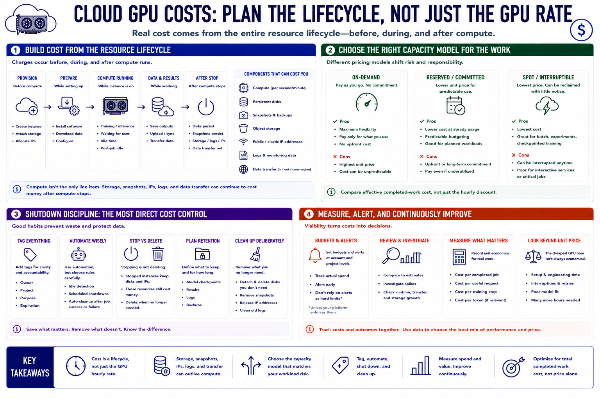

Cost Planning
Connecting to LMS... Progress: in progress

Narration
Build a cost estimate from the resource lifecycle, not the advertised GPU rate. Compute charges accumulate while an instance is running, including time spent installing software, downloading models, waiting for a user, or sitting idle after a job completes. Persistent disks, snapshots, object storage, reserved addresses, and logs may continue to cost money after compute stops. Data transfer charges can appear when models, datasets, or results cross regions or leave the provider.
On-demand capacity offers flexibility with no long commitment. Reserved or committed capacity may reduce unit price for predictable use but transfers utilization risk to the customer. Spot or interruptible capacity can be economical for restartable batch jobs, experiments, and checkpointed training. It is a poor fit for work that cannot tolerate termination or for an interactive service without failover. Compare effective completed-work cost, not only the hourly discount.
Shutdown discipline is the most direct cost control. Tag resources with owner, project, purpose, and expiration. Use automatic idle detection carefully, scheduled shutdowns for development environments, and job automation that releases compute after success or failure. Distinguish stopping from deleting: a stopped instance may retain billable disks and addresses. Define retention needs before cleanup so cost control does not destroy required data.
Set budgets and alerts at account and project levels, but do not treat alerts as hard limits unless the platform explicitly enforces them. Review actual charges against estimates and investigate unusual runtime, transfer, or storage growth. Record cost per completed job or per useful request alongside technical performance. The cheapest GPU hour is not economical if setup overhead, interruptions, or poor model fit require many more hours.